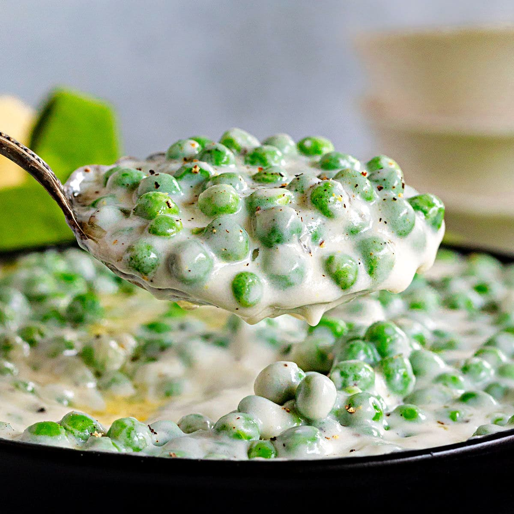

Cream Peas
- Combine Peas, Water, and salt in medium saucepan. Bring to a boil, then stir in butter
- Whisk together cream, flour, and sugar in a small bowl
- Stir mixture into peas
- Cook over medium-high heat until thick and bubbly
- Roughly cook for 5 minutes!
Click me to return home!
